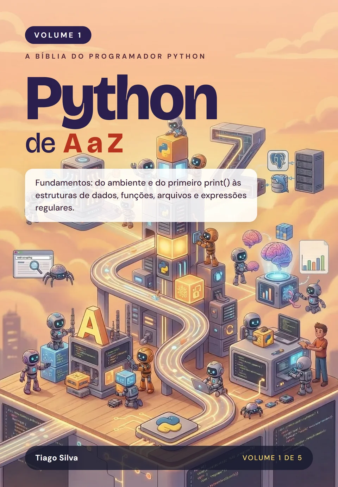

Python de A a Z: Fundamentos
por Tiago Silva
O ponto de partida para quem quer aprender Python de verdade: do zero absoluto ao Python do dia a dia, entendendo o que acontece por baixo de cada linha.
- Páginas
- 464
- Idioma
- Português
- Publicação
- 10/2026
- Versão do Python
- 3.15
- Formatos
- Impresso e e-book (ePub)
Sobre este livro
Comece certo: Python do zero, entendendo o porquê de cada coisa
Muita gente aprende Python copiando código que funciona e trava no primeiro erro que ninguém explicou. Este volume faz o contrário: parte do zero, sem exigir nenhum conhecimento prévio de programação, e explica o motivo das coisas, não só o como. Você monta um ambiente de trabalho profissional, entende variáveis, tipos e o jeito como o Python usa a memória, e avança por operadores, listas, tuplas, dicionários, conjuntos, decisões, laços, funções, texto e Unicode, arquivos, datas, expressões regulares e a biblioteca padrão.
Cada capítulo traz exemplos que você executa, as pegadinhas que derrubam quem está começando, a seção "Pythônico ou não?", que ensina a escrever como os profissionais escrevem, e exercícios com gabarito e testes automatizados para você conferir o que aprendeu. Todo o código está em um repositório público, para você rodar e modificar enquanto lê. Fecham o volume uma referência rápida e um glossário.
No mercado de trabalho, base fraca é o que mais custa caro: é ela que separa quem só consegue seguir tutoriais de quem resolve problemas novos sozinho. Dominar estes fundamentos é o primeiro passo para passar em processos seletivos de Python, ler e manter o código de outras pessoas com segurança e crescer, volume a volume, até se tornar um especialista Python completo.
Por onde começar
Este é o volume de entrada. Se você nunca programou, ou programa em outra linguagem e quer aprender Python direito, comece por aqui: nenhum conhecimento prévio é necessário. Os Volumes 2 a 5 são independentes entre si, mas todos partem do Python do dia a dia que este volume ensina. Os cinco volumes formam a coleção completa, mas cada um se sustenta sozinho.
O que você vai aprender
- Instalar o Python e montar um ambiente de trabalho profissional, com ambientes virtuais e o uv
- Entender variáveis, tipos de dados e o modelo de memória do Python, com medições
- Dominar listas, tuplas, dicionários e conjuntos, sabendo o que cada operação custa
- Controlar o fluxo do programa com if, match/case e laços
- Escrever funções limpas e trabalhar com texto, bytes e Unicode sem surpresas
- Ler e gravar arquivos com pathlib, tratar datas e fusos horários e usar expressões regulares
- Escrever código idiomático, o que os profissionais chamam de "pythônico"
- Consultar depressa o que precisa, com uma referência rápida e um glossário de 130 termos
Sumário
14 capítulos e 2 apêndices. Toque em um item para ver do que ele trata.
1O Ecossistema Pythonp. 39
2Instalando o Python e Configurando um Ambiente Profissionalp. 53
3Variáveis, Tipos de Dados e Memóriap. 69
4Operadores e Expressõesp. 95
5Estruturas de Dados: Sequênciasp. 113
6Estruturas de Dados: Coleçõesp. 127
7Controle de Fluxo: Decisão (if e match/case)p. 151
8Controle de Fluxo: Iteraçãop. 181
9Funçõesp. 211
10Texto: Strings, Bytes e Unicodep. 239
11Arquivos, pathlib e Serializaçãop. 287
12Datas, Horas e Fusos Horáriosp. 333
13Expressões Regularesp. 367
14Um Tour pela Biblioteca Padrãop. 397
AReferência Rápidap. 427
BGlossáriop. 451
Avaliações
O que os leitores dizem
Texto da avaliação.